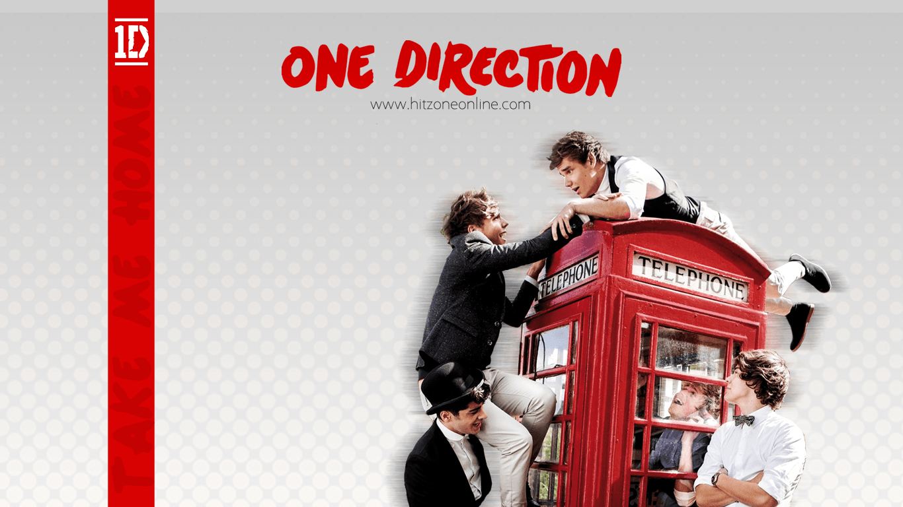
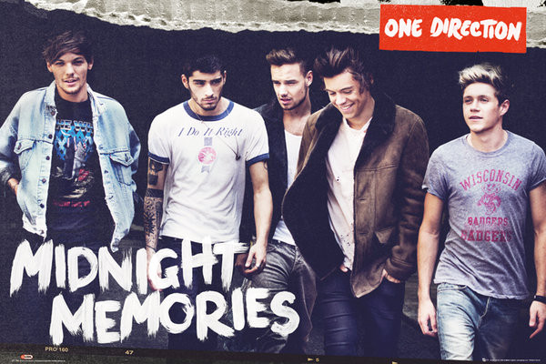

Up All Night
El 11 de septiembre de 2011, lanzaron a mercado su primer sencillo que los catapultaría a la fama, «What Makes You Beautiful». Rápidamente, alcanzó el número uno en las listas del Reino Unido, Irlanda y México con ventas récord. Además, recibió múltiples discos de platino por parte de varios organismos certificadores, como la ARIA, la CRIA, RIAA y la RIANZ. Asimismo, obtuvo reconocimientos por su popularidad, vídeo y mensaje, como un premio Brit, un Teen Choice Award y tres MTV Video Music Awards. Para septiembre del 2012, ya había vendido siete millones de copias mundialmente. Meses después de la publicación de «What Makes Beautiful», se lanzó «Gotta Be You», segundo sencillo del grupo. Este no tuvo mayor éxito comercial, ya que solo se ubicó en los tres mejores lugares de las listas del Reino Unido e Irlanda, y estos fueron sus únicos ingresos mundialmente. Finalmente, lanzaron su disco debut Up All Night entre finales de 2011 e inicios de 2012. Alcanzó el número uno en las principales listas de Australia, Canadá, Irlanda, Italia, México y Nueva Zelanda. Sin embargo, Talk That Talk de la cantante Rihanna evitó que pudiesen lograrlo en el Reino Unido, país de formación del quinteto. Por otro lado, en los Estados Unidos también debutó en el primer lugar de la Billboard 200 con 176 000 copias vendidas durante su primera semana, lo que convirtió a One Direction en el primer grupo británico que logra alcanzar dicho puesto en la historia de la lista.
Para continuar promocionándolo, lanzaron «One Thing» como el tercer sencillo. Aunque no tuvo mucho éxito, es una de las canciones más populares del grupo. A finales de 2011, iniciaron su primera gira mundial, el Up All Night Tour, para continuar promocionando el disco y además lanzaron «More than This», el último sencillo.
Take Me Home

A principios de 2012, la banda afirmó que su segundo álbum de estudio ya estaba en desarrollo. Niall Horan dijo que: «Queremos traer un nuevo álbum cada año o año y medio».Durante los meses siguientes, siguieron con el Up All Night Live Tour hasta junio que la gira acabó en los Estados Unidos. A raíz de esto, lanzaron su primer DVD, Up All Night: The Live Tour. Este alcanzó el número uno en ventas de varios países, y para junio de 2012 había vendido más de un millón de copias. Tras finalizar la gira, comenzaron a grabar canciones en Estocolmo, Suecia. En los meses siguientes, algunos artistas como McFly y Ed Sheeran aseguraron que habían trabajado en el nuevo material.Luego, el 3 de abril, Simon Cowell explicó al periódico The Independent que se encontraba buscando a los «mejores compositores y productores» para el nuevo álbum del quinteto, entre estos Max Martin y RedOne, quienes han trabajado con artistas como Britney Spears y Lady Gaga.
Semanas después, Harry Styles declaró al diario The Sun que: «Siempre estamos escribiendo en la carretera, los hoteles y los aeropuertos. No queremos que nuestra música suene como un hombre de 40 años en su oficina que la escribió y nos la dio para que la grabáramos». En agosto, cantaron «What Makes You Beautiful» en el cierre de las Olimpiadas de Londres 2012.Después, el 23 del mismo mes, la banda publicó un vídeo en su canal oficial de YouTube diciendo que el lanzamiento de su siguiente álbum estaba previsto para noviembre de ese año. En el mismo vídeo, también dijeron que el primer sencillo del disco sería «Live While We're Young» y que estaría disponible por preventa en iTunes esa misma noche. A pocas horas de haber estado disponible por preventa, alcanzó la primera posición en las tiendas de iTunes de cuarenta países, entre los que se encuentran Australia, Brasil, España, Francia, Italia y México, lo que la convirtió en la canción que más rápido se vendió de esa forma en la historia. Su lanzamiento radial estaba previsto para el 24 de septiembre, pero debido a que la canción fue filtrada en la web, la banda lo adelantó cuatro días. La canción obtuvo reseñas positivas y negativas por parte de los críticos musicales. Algunos comentaron que es «irresistible» y que su estribillo es «explosivo», mientras que otros dijeron que su inicio es similar al de «Should I Stay or Should I Go» de The Clash. En su lanzamiento oficial, alcanzó el número uno en Irlanda y Nueva Zelanda. Cinco días más tarde, Louis Tomlinson anunció vía Twitter que se titularía Take Me Home. Al día siguiente, en una entrevista con la estación de radio KIIS-FM, Horan explicó que el disco se llamaba así porque «no hay lugar como el hogar».
El 15 de octubre de 2012, Louis Tomlinson confirmó vía Twitter que el segundo sencillo de Take Me Home sería «Little Things», y que su vídeo ya estaba siendo filmado. Su lanzamiento radial se dio el 29 de octubre de 2012. La canción recibió comentarios positivos y negativos por parte de los críticos musicales. Algunos dijeron que suena más como una canción de Ed Sheeran que del quinteto, mientras que otros dijeron que es «hermosa» y «dulce». El tema contó con una buena recepción comercial en parte de Europa y Oceanía. En el Reino Unido debutó en el número uno del UK Singles Chart, lo que lo hizo el primer número uno del quinteto en el territorio desde que «What Makes You Beautiful» alcanzara dicho puesto en septiembre del 2011.5 Por otra parte, en Nueva Zelanda e Irlanda llegó al segundo puesto, mientras que en Australia al nueve.Tanto la edición estándar como la edición anuario fueron lanzadas entre el 9 y el 13 de noviembre de 2012 a través de la tienda digital iTunes. Sony lanzó ambas ediciones en Alemania, Australia, Austria, Bélgica, España, Finlandia, Francia,Irlanda,Luxemburgo, México,Noruega, Nueva Zelanda,los Países Bajos, Suecia y Suiza el 9 de noviembre. El mismo día, Niall Horan confirmó que el tercer sencillo sería «Kiss You» y que se lanzaría el 16 de noviembre. A diferencia de los dos previos, este tuvo una mala recepción comercial. En los Estados Unidos llegó hasta el puesto sesenta y cinco, y también se convirtió en la peor posición de algún sencillo del quinteto en el Billboard Hot 100. En Canadá sucedió algo similar, ya que alcanzó el puesto treinta del Canadian Hot 100.
Midnight Memories

El 17 de enero de 2013, One Direction viajó a la ciudad de Tokio, Japón, para comenzar las grabaciones de su filme los dos días posteriores. El 18, fueron al programa Music Station para ser entrevistados. Allí, contaron su experiencia en el país, ya que era su primera vez en él, y además cantaron «Live While We're Young».= Al día siguiente, realizaron una rueda de prensa. En la ronda de preguntas de esta, Niall Horan anunció que One Direction volvería a Japón el 2 y 3 de noviembre de 2013 para dar dos conciertos en el Makuhari Messe de Tokio. Terminada la rueda de prensa, cantaron un total de cinco pistas en un evento realizado por ellos llamado Team 1D Japan Party, que contó con la asistencia de aproximadamente 20 000 personas. La primera canción interpretada fue un adelanto de «One Way or Another (Teenage Kicks)», una versión hecha por ellos con el fin de apoyar a la fundación Comic Relief. Además, parte de esta presentación pertenecerá a su película. Luego, cantaron «What Makes You Beautiful», seguida de «Live While We're Young», «Little Things» y «Kiss You». Poco después, el 26 de enero, viajaron a Cannes, Francia, para presentar el tercer sencillo del álbum y recibir el premio al dúo o grupo internacional del año. Tras su interpretación, los seguidores franceses del grupo realizaron una conmoción en las diferentes redes sociales, por lo que el quinteto recibió además el premio al mejor momento digital. Algunas semanas más tarde, el 8 de febrero, el programa matutino de noticias Daybreak estrenó un adelanto del filme del quinteto donde se pudieron ver pequeñas escenas de ellos divirtiéndose, narrando sus anécdotas detrás de las cámaras y trabajando en sus presentaciones.
El 20 febrero, asistieron a los Brit Awards y recibieron el reconocimiento al artista británico más exitoso mundialmente, por todas sus ventas logradas en el 2012. En marzo, revelaron que su primera película se llamaría This is Us. Asimismo, dieron a conocer la mayoría de sus estrenos, que van desde el 29 de agosto de 2013 hasta el 3 de enero de 2014. El 16 de mayo, anunciaron una tercera gira para el 2014, la cual recorrería por primera vez la mayor parte de Latinoamérica. Esta lleva por nombre Where We Are Stadium Tour, y según One Direction, sería más grande que el Up All Night Tour y el Take Me Home Tour. Para promocionar su película, lanzaron el 22 de julio su noveno sencillo, «Best Song Ever».
FOUR
.jpg)
El 27 de abril de 2014, se confirmó que One Direction estaban trabajando en su cuarto álbum de estudio. Good Charlotte informó de haber colaborado con Payne y Tomlinson para escribir canciones. Payne afirmó que el álbum sería "afilado" y el grupo había escrito la mayor parte de las canciones. El 21 de julio, One Direction anunció que próximamente se estrenaría su segunda película de concierto: Where We Are - The Concert Film, que documenta los conciertos del 28 y 29 de julio de 2014 que tuvieron lugar en el estadio de San Siro durante el Where We Are Tour. También anunciaron que saldría un libro autobiográfico "Where We Are" con fecha para el 25 de septiembre de 2014.
El 8 de septiembre, de One Direction anunció su cuarto álbum de estudio que se titula Four, que se estrenará el 17 de noviembre de 2014. Como parte del anuncio, una de las canciones del álbum, "Fireproof", fue lanzado para su descarga gratuita durante 24 horas en su página oficial. El 14 de septiembre se anunció el primer sencillo oficial del álbum, "Steal My Girl", el cual sería lanzado el 29 de septiembre. El video musical fue lanzado el 24 de octubre. El 28 de octubre, se informó de que otro video musical de One Direction estaba en la producción, lo que sugiere que otro sencillo sería lanzado. Más tarde confirmaron que el segundo sencillo del álbum sería "Night Changes". La pista fue lanzada el 14 de noviembre, tres días antes del lanzamiento del álbum. Four fue puesto en libertad el 17 de noviembre, superando el Billboard 200 y el UK Album Chart, una vez más.
El 22 de noviembre, se informó que el mánager del tour Paul Higgins, quien ha estado con el grupo desde su formación, se separó de la banda. En un Reportaje para E! News publicado el 4 de diciembre, Styles y Tomlinson, fueron listados como la tercera "relación" más reblogueada en Tumblr dentro del año, Styles y Horan ocupan la novena ubicación, y Payne y Malik la decimoquinta. La banda confirmó en los Premios de la Música de la BBC que, tras el éxito de Four, que tenían esperanzas de seguir para ir "a algún otro sitio" en su quinto álbum.
El 25 de marzo de 2015 la banda anunció la salida de Malik del grupo. Ellos mismos admitieron que estuvieron enfadados por la decisión de Malik. El 14 de mayo el grupo hizo su primera aparición pública en The Late Late Show with James Corden, donde confirmaron que continuarían trabajando sin un quinto miembro. Desde que Malik abando
El 31 de julio de 2015, el grupo lanzó «Drag Me Down». La canción se estrenó como el sencillo principal de su próximo quinto álbum de estudio, y el primer material lanzado por el grupo después de la salida de Malik. El 22 d
nó la banda, tuvo éxito sacando a la venta su debut como sencillo Pillowtalk y el álbum Mind of Mine.
Made In The AM
e septiembre, se anunció oficialmente el título del quinto álbum de estudio Made in the AM, junto con al lanzamiento del sencillo promocional «Infinity». En octubre, se lanzó el segundo sencillo «Perfect». La pista alcanzó el top 10 en Billboard, convirtiéndose en el segundo consecutivo del grupo (después de «Drag Me Down»).
En noviembre de 2015, se lanzó su quinto álbum Made in the AM, Debutó en el número uno en las listas británicas con 93.189 copias, y en el número dos en el Billboard 200, con 402.000 copias vendidas en su primera semana de lanzamiento. En los American Music Awards de 2015, One Direction ganó el premio al Artista del Año por segundo año consecutivo. El 6 de noviembre del mismo año, se estreno el tercer y último sencillo hasta hora de la banda «History». Tras la publicación del álbum, el grupo comenzó una pausa indefinida.1
En mayo de 2017, todos los miembros del grupo habían lanzado sencillos en solitario. En los Premios Brit de 2017, la banda ganó el premio al vídeo del año por su canción «History». Payne aceptó el premio en representación de toda la banda. En 2018 se supo que el grupo había cerrado la compañía que gestionaba sus giras, prácticamente dando por descartada una reunión.
- Todos los derechos reservados ©
- Toda información fue sacada de Wikipedia